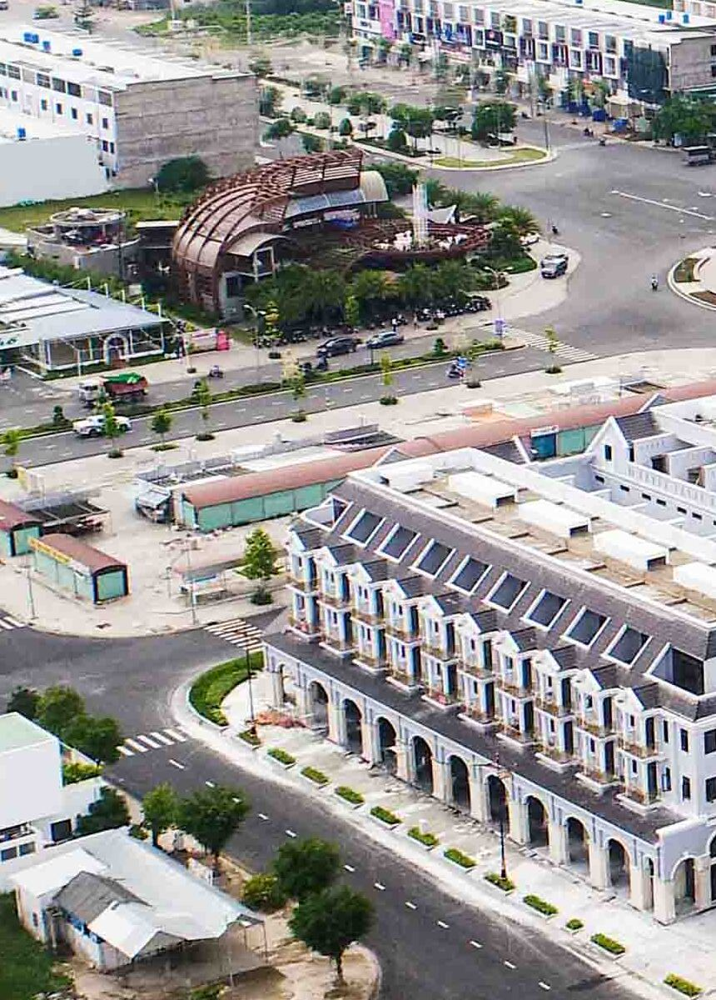

The Local Tales
where your journeys begin
The Local Tales |
|
where your journeys begin |
|  | Phu Cuong urban area was built on the sea encroachment area No. 4 and No. 5 in Rach Gia city. Tourists like to visit and take pictures in Phu Cuong urban area because the space inside the urban area is as beautiful as the ones in the West. The townhouses in Phu Cuong urban area are built in a very beautiful European classical style. In Phu Cuong urban area, every street, every sidewalk, neighborhood... can become the background for beautiful check-in photos. Not only beautiful streets, Phu Cuong urban area also owns many of the most famous Café locations in Rach Gia city such as Sophia Café located in the center of the urban area or Atelier Café 68 located on 3/2 street. |